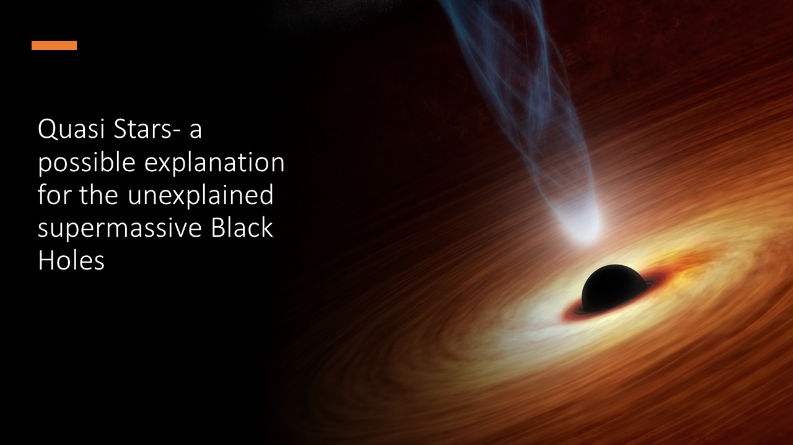

This article looks to discuss one of the theories as to how some of the super massive black holes came to be the sizes they are today. Black holes can only grow at
a certain rate. As a result of this there are many super massive black holes that break the laws about what we know about them. In theory 'it should take
millions/billions of years to grow to thousands/millions of solar masses, but we know that some black holes had masses of 800 million solar masses just 690 million
years after the big bang'(Banados, 2017). The theory of the quasi-star (a star with a black hole at it's core) (Koberlein, 2013) is a possible answer to this problem.
Introduction and Main Article
The theory is that proto stars could grow to be so massive due to the conditions at the time (0.1-0.5 billion years after the Big Bang) (Begelman, 2006),
that they could form something known as a quasi-star. A quasi-star is an object that resembles a star but instead of being powered by nuclear fusion in it's core,
a quasi-star is powered by a black hole at it's core (Koberlein, 2013). The idea suggests that the proto star begins to collapse into a star but it's central
region is so massive that it forms a black hole at it's center (Begelman, 2006). Usually when this occurs in normal stars the rest of the star is destroyed as a
supernovae causes an enormous amount of energy to be released driving away the rest of the layers of the star. However, unlike other stars, a quasi-star would
have been so massive that it did not drive the rest of the layers away (Ball, 2011). The further accretion of matter into the black hole releases a significant
amount of heat which acts similar to the way fusion powers a star. In theory a star of at least 1 million solar masses would be required for this to occur and
stabilise. For comparison, the largest mass of any star we know of today has only about 300 solar masses (Tillman, 2023). Theoretically these quasi-stars could
have been as large as 10 million solar masses and the radius of which could have been 800 thousand times wider than that of our Sun,380 times larger
(Schleicher, 2013) than the largest star we know of today.
There is the requirement of extremely large dark matter halos which would bring together astronomically large  amounts of hydrogen gas (Wise, 2008). These conditions would allow the star to grow to the proportions
required. The star forms as hydrogen gas is drawn together. In scenarios today when the star forms and starts
nuclear fusion a large amount of radiation energy is released which drives away the surrounding gas
cloud (Rosen, 2020). However, due to the hydrogen gas clouds being so large in these dark matter halos, the
gas is not scattered and so continues to add to the mass of the star which allows the star to grow to massive
proportions of up to 10 million solar masses. Due to the size and mass of the star the core is crushed into
a black hole. In most instances this would produce a supernova which would destroy the star but in this
case the star survives the supernova (Ball, 2011). When the black hole is born it keeps the same angular
momentum as that of the star, meaning matter orbits the black hole creating an accretion disk. An accretion
disk is 'a structure which forms around a compact object(e.g. a white dwarf, neutron star or black hole)
when matter flows towards it'(Oxford Reference, 2023) In these stars the pressure coming from the rest of
the star is so large that the star pushes matter from the accretion disk into the black hole allowing it to
consume much more matter than it should be able to. The accretion disk becomes so hot and emits so much
radiation that it counteracts the weight of the star that it is surrounded by. Over the next few million
years the black hole star (quasi-star) is consumed from within by the black hole. The black hole consumes
more and more matter and increases in size. This heats up the star forcing it to expand even more.
Eventually the accretion disks become too powerful, and it blows the star apart leaving behind a black hole
which could be up to 100 thousand solar masses. These black holes should take millions or even billions of years
to get to this size and yet it happens much faster in this case. These black holes could merge with each
other and be able to draw in enough matter to become the giants we see today.
The table below shows just a few of the supermassive black holes we know of today and their extreme masses. (Koberlein, 2013)
amounts of hydrogen gas (Wise, 2008). These conditions would allow the star to grow to the proportions
required. The star forms as hydrogen gas is drawn together. In scenarios today when the star forms and starts
nuclear fusion a large amount of radiation energy is released which drives away the surrounding gas
cloud (Rosen, 2020). However, due to the hydrogen gas clouds being so large in these dark matter halos, the
gas is not scattered and so continues to add to the mass of the star which allows the star to grow to massive
proportions of up to 10 million solar masses. Due to the size and mass of the star the core is crushed into
a black hole. In most instances this would produce a supernova which would destroy the star but in this
case the star survives the supernova (Ball, 2011). When the black hole is born it keeps the same angular
momentum as that of the star, meaning matter orbits the black hole creating an accretion disk. An accretion
disk is 'a structure which forms around a compact object(e.g. a white dwarf, neutron star or black hole)
when matter flows towards it'(Oxford Reference, 2023) In these stars the pressure coming from the rest of
the star is so large that the star pushes matter from the accretion disk into the black hole allowing it to
consume much more matter than it should be able to. The accretion disk becomes so hot and emits so much
radiation that it counteracts the weight of the star that it is surrounded by. Over the next few million
years the black hole star (quasi-star) is consumed from within by the black hole. The black hole consumes
more and more matter and increases in size. This heats up the star forcing it to expand even more.
Eventually the accretion disks become too powerful, and it blows the star apart leaving behind a black hole
which could be up to 100 thousand solar masses. These black holes should take millions or even billions of years
to get to this size and yet it happens much faster in this case. These black holes could merge with each
other and be able to draw in enough matter to become the giants we see today.
The table below shows just a few of the supermassive black holes we know of today and their extreme masses. (Koberlein, 2013)
Analysis and discussion
Table 1: Size of supermassive black holes
| Black Hole | Solar Mass |
|---|---|
| Sagittarius A | 4.3x10^6 |
| Ton 618 | 6X10^10 |
| M87's | 5.4x10^9 |
References
Koberlein.B (2013)- briankoberlein.com, 'Black Hole Sun' Available at: (Accessed:19th October 2023) Schleicher, Dominik RG, (2013) - 'Massive black hole factories: Supermassie and quasi-star formation in primordial halos' Available at:Dominik Schleicher- Massive Black Hole Factories
(Accessed:10th October 2023) Tillman. T. N.(2023) - Space.com - What is the biggest star in the universe? Available at:T.Tillman- What is the biggest star in the universe?
(Accessed:19th October 2023) Begelman, Mitchell C, (2006) - 'Quasi-stars: accreting black holes inside massive envelopes', Monthly notices of the Royal Astronomical Society, Volume 387, Issue 4 Available at:Mitchell Begelman - Quasi stars
(Accessed:19th October 2023) Rosen, Anna L, (2020), -' The Role of Outflows, Radiation Pressure, and Magnetic Fields in Massive Star Formation', Astronomical Journal, Volume 160, Number 2 Available at:Anna Rosen - The Role of Outflows, Radiation Pressure, and Magnetic Fields in Massive Star Formation
(Accessed:21st October 20023)
Wise, John H, (2008), - 'Resolving the Formation of Protogalaxies. II. Central Gravitational Collapse', The Astrophysical Journal, Volume 682, Number 2 Available at:John Wise - Resolving the Formation of Protogalaxies
(Accessed:28th October 2023) Ball, Warrick H, (2011), - 'The Structure and evolution of quasi-stars', Monthly Notices of the Royal Astronomical Society, Volume 414, Issue 3 Available at:Warrick Ball - The Structure and evolution of quasi-stars
(Accessed:29th October 2023) Banados, Eduardo, (2017), - 'An 800-million-solar-mass black hole in a significantly neutral Universe at a redshift of 7.5', Nature, vol 553 Available at: (Accessed:29th October 2023) NASA, (2018), - 'NASA's James Webb Space Telescope Could Potentially Detect the First Stars and Black Holes' Available at: (Accessed:3rd October 2023) Kurzgesagt- In a Nutshell, (2022), Youtube video - 'Black Hole Star - The Star that shouldn't exist' Available at: (Accessed:20th October 2023) Oxford Refernce,2023 - Oxford refernce.com - accretion disk Available at: (Accessed:3rd October 2023)
Conference Presentation: Quasi stars- A possible explanation for the unexplained supermassive black holes
